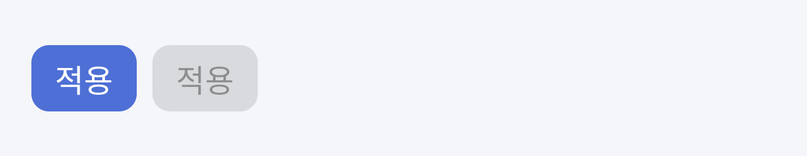
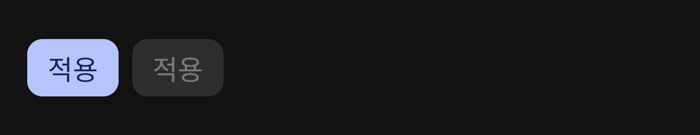

StudioPrimaryToolbarButton
편집기 상단에서 적용·추가·저장 같은 주요 조작을 표시합니다.
- 컴포넌트 ID
studio-primary-toolbar-button- 분류
- 탐색
- 구현
StudioPrimaryToolbarButton·MyWidget/app/src/main/java/com/mywidget/editor/core/ui/StudioChromeControls.kt:64- 주요 API
- onClick, enabled, horizontalPadding, modifier, visualModifier, content
- 지원 상태
- 활성
- 비활성
- 눌림
- 변형
- 채워진 주요 동작
- 크기
- 터치 최소 48×48dp
- 시각 높이 34dp·반경 9dp
- 기본 가로 패딩 12dp
- 테마·토큰
- primary/onPrimary
- onSurface 비활성 색
- 접근성·사용 규칙
- 버튼 역할과 전체 동작 설명을 전달합니다. 좁은 창의 패딩은 상단바가 계산합니다.
- 공통 사용 여부
- 편집기 타이틀바에서 사용
- 설계 품질
- 다른 푸터 버튼과 다른 단일 행 크기 계약을 소유함
- 판단
- 유지
- 판단 근거
- 좁은 폭·큰 글꼴에서 시각 표면과 실제 조작 영역이 함께 유지됩니다.
- 구현·문서
- 현재 소스 위치와 심볼 확인
- 렌더링
- 네이티브 캡처 있음
코드 예시
Row(horizontalArrangement = Arrangement.spacedBy(8.dp)) {
StudioPrimaryToolbarButton(onClick = {}) { Text("적용") }
StudioPrimaryToolbarButton(onClick = {}, enabled = false) { Text("적용") }
}Android 네이티브 예시
아래 캡처에 표시된 상태와 기기 조건을 확인했습니다.

411 × 891 dp · 560 dpi · 글꼴 1배 · API 35 · ko-KR
캡처 기준 HEAD
28c96a452 · 소스 지문 2926a62326fe · 2026-11-13T13:54:53.964821Z
411 × 891 dp · 560 dpi · 글꼴 1배 · API 35 · ko-KR
캡처 기준 HEAD
28c96a452 · 소스 지문 2926a62326fe · 2026-11-13T13:54:53.964821Z